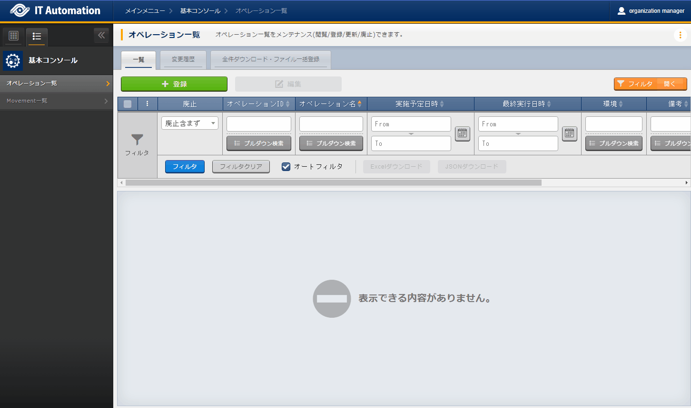

6. Basic console¶
6.1. Introduction¶
This document aims to explain the ITA basic console functions and how to use them.
6.2. ITA basic console overview¶
This section explains the basic console's main features and how to operate them.
The basic console provides the user with the following functions required in order to perform common ITA tasks.
6.4. Function/operation¶
6.4.1. ITA basic console¶
6.4.1.1. Operation list¶
In the [Operation list] page, users can manage operations that are executed to target hosts by orchestrators.
Example)Additional service operations" etcPress the Register button to register operation information.
 図 6.1 Register page (operation list)¶
The items found in the Registration page are as following.
{kind=link}
6.4.1.2. Movement list¶
In the [Movement list] page, the user can check the links between Movements and orchestrators(view only).
注釈
For registering Movements, refer to the different Driver manuals and register from the desired orchestrator driver console menu.
{kind=link}
図 6.2 Submenu (Movement list)¶